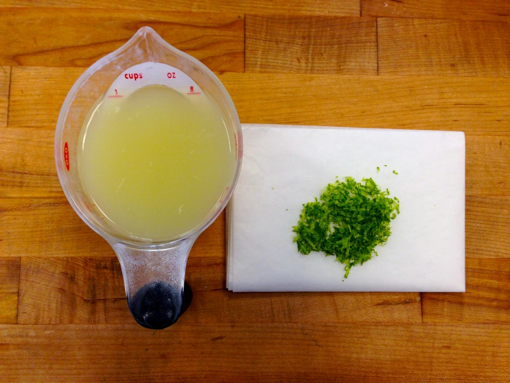

Lime is an indigenous Southeast Asian plant that was brought over to the Americas. There, it developed into a different species in the Florida Keys, a group of islands off the southern tip of Florida. This species is known as key limes.
Key limes are different from "normal limes," which are actually called "Persian limes." Persian limes are a product of human engineering, which has rendered them seedless, bigger, juicer, and more resistant to disease. However, key limes are more aromatic and acidic than Persian limes, which is why they're used to make key lime pie!
Both the juice and the zest of limes are used in key lime pie.
